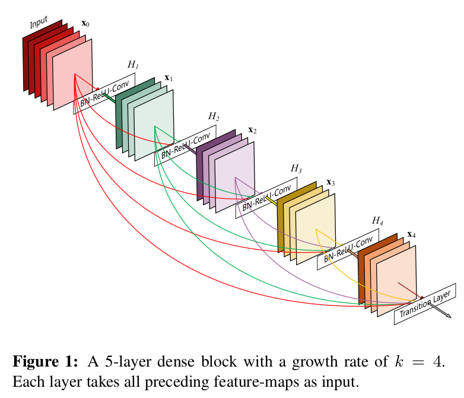
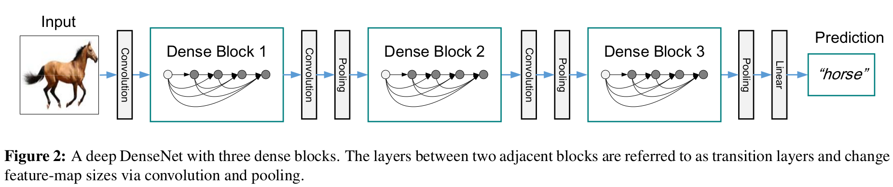
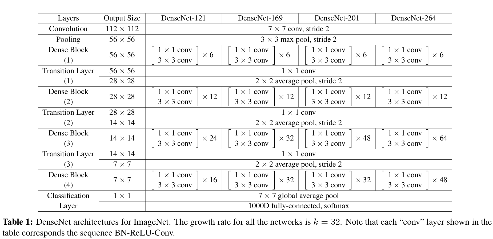
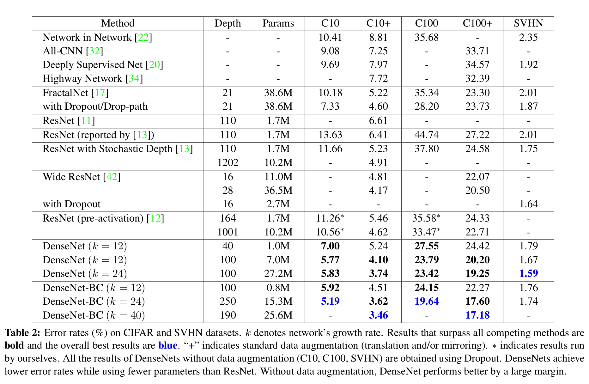
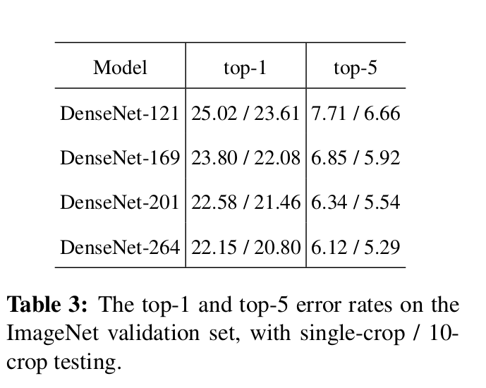
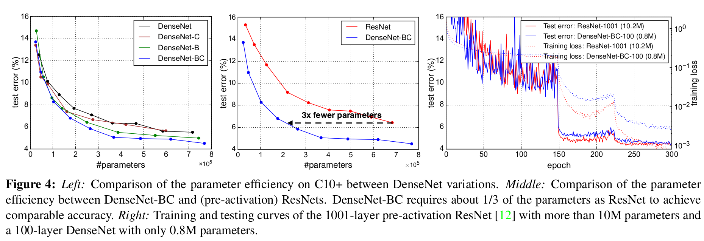

之前的一些研究表明了在输入层和输出层之间添加一些跳接可以让网络架构更深，且训练更有效率。例如ResNet[1]，解决了深层网络梯度消失的问题，而GoogleNet[2]则是让网络加宽。借鉴这两种思想，让网络中各层之间的信息传递，将所有的层连接起来，这就是DenseNet[3]的基本思想。
在传统的卷积神经网络中，第DenseNet有以下几个优点：

假设
传统的卷积前馈网络将 ResNet通过标识函数（identity function）添加了一个绕过非线性变换
ResNet的一个优点是梯度可以直接通过标识函数（identify function）从后面的层流向前面的层。但是，标识函数（identify function）和
为了进一步地层与层之间的信息流，DenseNet提出了一个不同的连接模型：对于每一层，都添加一个跳接到其他所有之后的层。Figure 1表示了DenseNet连接的方式。因此，
其中
当特征图尺寸变化时，式2中的拼接操作不可行。但是，卷积网络一个重要的部分就是降采样层，用于改变特征图的尺寸。为了在DenseNet架构中实现降采样，将网络分为多个紧密连接的dense blocks，如Figure 2所示。

将dense block之间的层叫做过渡层，在这里做卷积和池化操作。过渡层包含批量归一层和 1 x 1 卷积层，紧跟一个 2 x 2 平均池化层
如果每个函数 DenseNet 和现有的网络架构最重要的区别是DenseNet层数很窄，仅有
尽管每一层都只产生 ResNet中在 3 x 3卷积前使用 1 x 1 卷积作为bottleneck层减少输入特征图的数量，可以提高计算效率。使用了Bottleneck的网络命名为DenseNet-B。
为了进一步使模型更加紧凑，在过渡层减少特征图的数量。如果dense block包括 bottleneck和过渡层设置DenseNet-BC
在所有除了ImageNet的数据集中，实验使用的DenseNet有三个dense block，每个块的层数相等。在第一个dense block之前，对输入图像进行一个带有16（或者是DenseNet-BC增长率两倍）个输出通道的卷积操作。对于卷积核大小为 3 x 3 的卷积层，输入的每一侧都用一个像素进行零填充以修正特征图尺寸。在两个连续的dense block之间使用一个1 x 1 的卷积接着一个 2 x 2 的池化层组成的过渡层。在最后一个dense block，使用一个全局平均池化层和一个softmax函数。在这三个dense block中的特征图分别为 32 x 32、 16 x 16和8 x 8。
基本的DenseNet架构使用了以下的参数配置：
对于DenseNet-BC，使用了以下的参数：
在ImageNet数据集的实验中，使用了DenseNet-BC结构，输入图像尺寸为 224 x 224，dense block有4个。初始的卷积层包含 2k 个步长为2的7 x 7卷积；其他层的特征图数量遵循设置 ImageNet配置如Table 1 所示

训练集-50, 000张图片，测试集10, 000张图片，从训练集中选 5,000 张图片作为验证集。
训练集 73,257张图片，测试集26,032图片，还有531,131张图片作为额外的训练，从训练集中挑选6,000张图片作为验证集
训练集使用了1.2m张图片，50,000张图片作为验证
single-crop和10-crop使用的SGD方法训练
CIFAR
SVHN
初始学习率设置为0.1，在50%和75%训练进度除以10
ImageNet
CIFAR和SVHN主要的结果如table 2所示

在ImageNet分类的结果和ResNet的对比如table 3和Figure 4所示。


这里的仿真代码基本上参照的是这个仓库：gpleiss/efficient_densenet_pytorch[4]，笔者还是喜欢使用jupyter调试，这里将其改为jupyter格式的代码，可以参考这个仓库madao33/computer-vision-learning
首先导入基本模块
101# import basic modules2import os3import time4import math5from torchvision import datasets, transforms6import torch7import torch.nn as nn8import torch.nn.functional as F9import torch.utils.checkpoint as cp10from collections import OrderedDict这里使用的是CIFAR10数据集，通过torchvision下载实在是过于缓慢，所以直接下载数据集，然后在当前目录下创建一个data文件夹，将下载好的文件不解压直接放在这个data文件夹中
设置的参数是参照论文中的table 2，但是本人电脑配置较差，仅一块GTX 1066，要完整的运行300 epoch大约需要耗费4个小时，暂时没有完整地运行，有想法的可以尝试一下
xxxxxxxxxx1091# 设置参数2data = 'data'3depth = 404growth_rate = 125valid_size = 50006n_epochs = 3007batch_size = 648efficient = True9save = './save'
41# Get densenet configuration2if (depth - 4) % 3:3 raise Exception('Invalid depth')4block_config = [(depth - 4) // 6 for _ in range(3)]x
1# Data transforms2mean=[0.49139968, 0.48215841, 0.44653091]3stdv= [0.24703223, 0.24348513, 0.26158784]4train_transforms = transforms.Compose([5 transforms.RandomCrop(32, padding=4),6 transforms.RandomHorizontalFlip(),7 transforms.ToTensor(),8 transforms.Normalize(mean=mean, std=stdv),9])10test_transforms = transforms.Compose([11 transforms.ToTensor(),12 transforms.Normalize(mean=mean, std=stdv),13])131# Datasets2train_set = datasets.CIFAR10(data, train=True, transform=train_transforms, download=True)3test_set = datasets.CIFAR10(data, train=False, transform=test_transforms, download=False)4
5if valid_size:6 valid_set = datasets.CIFAR10(data, train=True, transform=test_transforms)7 indices = torch.randperm(len(train_set))8 train_indices = indices[:len(indices) - valid_size]9 valid_indices = indices[len(indices) - valid_size:]10 train_set = torch.utils.data.Subset(train_set, train_indices)11 valid_set = torch.utils.data.Subset(valid_set, valid_indices)12else:13 valid_set = None1451def _bn_function_factory(norm, relu, conv):2 def bn_function(*inputs):3 concated_features = torch.cat(inputs, 1)4 bottleneck_output = conv(relu(norm(concated_features)))5 return bottleneck_output6
7 return bn_function8
9
10class _DenseLayer(nn.Module):11 def __init__(self, num_input_features, growth_rate, bn_size, drop_rate, efficient=False):12 super(_DenseLayer, self).__init__()13 self.add_module('norm1', nn.BatchNorm2d(num_input_features)),14 self.add_module('relu1', nn.ReLU(inplace=True)),15 self.add_module('conv1', nn.Conv2d(num_input_features, bn_size * growth_rate,16 kernel_size=1, stride=1, bias=False)),17 self.add_module('norm2', nn.BatchNorm2d(bn_size * growth_rate)),18 self.add_module('relu2', nn.ReLU(inplace=True)),19 self.add_module('conv2', nn.Conv2d(bn_size * growth_rate, growth_rate,20 kernel_size=3, stride=1, padding=1, bias=False)),21 self.drop_rate = drop_rate22 self.efficient = efficient23
24 def forward(self, *prev_features):25 bn_function = _bn_function_factory(self.norm1, self.relu1, self.conv1)26 if self.efficient and any(prev_feature.requires_grad for prev_feature in prev_features):27 bottleneck_output = cp.checkpoint(bn_function, *prev_features)28 else:29 bottleneck_output = bn_function(*prev_features)30 new_features = self.conv2(self.relu2(self.norm2(bottleneck_output)))31 if self.drop_rate > 0:32 new_features = F.dropout(new_features, p=self.drop_rate, training=self.training)33 return new_features34
35
36class _Transition(nn.Sequential):37 def __init__(self, num_input_features, num_output_features):38 super(_Transition, self).__init__()39 self.add_module('norm', nn.BatchNorm2d(num_input_features))40 self.add_module('relu', nn.ReLU(inplace=True))41 self.add_module('conv', nn.Conv2d(num_input_features, num_output_features,42 kernel_size=1, stride=1, bias=False))43 self.add_module('pool', nn.AvgPool2d(kernel_size=2, stride=2))44
45
46class _DenseBlock(nn.Module):47 def __init__(self, num_layers, num_input_features, bn_size, growth_rate, drop_rate, efficient=False):48 super(_DenseBlock, self).__init__()49 for i in range(num_layers):50 layer = _DenseLayer(51 num_input_features + i * growth_rate,52 growth_rate=growth_rate,53 bn_size=bn_size,54 drop_rate=drop_rate,55 efficient=efficient,56 )57 self.add_module('denselayer%d' % (i + 1), layer)58
59 def forward(self, init_features):60 features = [init_features]61 for name, layer in self.named_children():62 new_features = layer(*features)63 features.append(new_features)64 return torch.cat(features, 1)65
66
67class DenseNet(nn.Module):68 r"""Densenet-BC model class, based on69 `"Densely Connected Convolutional Networks" <https://arxiv.org/pdf/1608.06993.pdf>`70 Args:71 growth_rate (int) - how many filters to add each layer (`k` in paper)72 block_config (list of 3 or 4 ints) - how many layers in each pooling block73 num_init_features (int) - the number of filters to learn in the first convolution layer74 bn_size (int) - multiplicative factor for number of bottle neck layers75 (i.e. bn_size * k features in the bottleneck layer)76 drop_rate (float) - dropout rate after each dense layer77 num_classes (int) - number of classification classes78 small_inputs (bool) - set to True if images are 32x32. Otherwise assumes images are larger.79 efficient (bool) - set to True to use checkpointing. Much more memory efficient, but slower.80 """81 def __init__(self, growth_rate=12, block_config=(16, 16, 16), compression=0.5,82 num_init_features=24, bn_size=4, drop_rate=0,83 num_classes=10, small_inputs=True, efficient=False):84
85 super(DenseNet, self).__init__()86 assert 0 < compression <= 1, 'compression of densenet should be between 0 and 1'87
88 # First convolution89 if small_inputs:90 self.features = nn.Sequential(OrderedDict([91 ('conv0', nn.Conv2d(3, num_init_features, kernel_size=3, stride=1, padding=1, bias=False)),92 ]))93 else:94 self.features = nn.Sequential(OrderedDict([95 ('conv0', nn.Conv2d(3, num_init_features, kernel_size=7, stride=2, padding=3, bias=False)),96 ]))97 self.features.add_module('norm0', nn.BatchNorm2d(num_init_features))98 self.features.add_module('relu0', nn.ReLU(inplace=True))99 self.features.add_module('pool0', nn.MaxPool2d(kernel_size=3, stride=2, padding=1,100 ceil_mode=False))101
102 # Each denseblock103 num_features = num_init_features104 for i, num_layers in enumerate(block_config):105 block = _DenseBlock(106 num_layers=num_layers,107 num_input_features=num_features,108 bn_size=bn_size,109 growth_rate=growth_rate,110 drop_rate=drop_rate,111 efficient=efficient,112 )113 self.features.add_module('denseblock%d' % (i + 1), block)114 num_features = num_features + num_layers * growth_rate115 if i != len(block_config) - 1:116 trans = _Transition(num_input_features=num_features,117 num_output_features=int(num_features * compression))118 self.features.add_module('transition%d' % (i + 1), trans)119 num_features = int(num_features * compression)120
121 # Final batch norm122 self.features.add_module('norm_final', nn.BatchNorm2d(num_features))123
124 # Linear layer125 self.classifier = nn.Linear(num_features, num_classes)126
127 # Initialization128 for name, param in self.named_parameters():129 if 'conv' in name and 'weight' in name:130 n = param.size(0) * param.size(2) * param.size(3)131 param.data.normal_().mul_(math.sqrt(2. / n))132 elif 'norm' in name and 'weight' in name:133 param.data.fill_(1)134 elif 'norm' in name and 'bias' in name:135 param.data.fill_(0)136 elif 'classifier' in name and 'bias' in name:137 param.data.fill_(0)138
139 def forward(self, x):140 features = self.features(x)141 out = F.relu(features, inplace=True)142 out = F.adaptive_avg_pool2d(out, (1, 1))143 out = torch.flatten(out, 1)144 out = self.classifier(out)145 return out101# Models2model = DenseNet(3 growth_rate=growth_rate,4 block_config=block_config,5 num_init_features=growth_rate*2,6 num_classes=10,7 small_inputs=True,8 efficient=efficient,9)10print(model)
xxxxxxxxxx1701DenseNet(2 (features): Sequential(3 (conv0): Conv2d(3, 24, kernel_size=(3, 3), stride=(1, 1), padding=(1, 1), bias=False)4 (denseblock1): _DenseBlock(5 (denselayer1): _DenseLayer(6 (norm1): BatchNorm2d(24, eps=1e-05, momentum=0.1, affine=True, track_running_stats=True)7 (relu1): ReLU(inplace=True)8 (conv1): Conv2d(24, 48, kernel_size=(1, 1), stride=(1, 1), bias=False)9 (norm2): BatchNorm2d(48, eps=1e-05, momentum=0.1, affine=True, track_running_stats=True)10 (relu2): ReLU(inplace=True)11 (conv2): Conv2d(48, 12, kernel_size=(3, 3), stride=(1, 1), padding=(1, 1), bias=False)12 )13 (denselayer2): _DenseLayer(14 (norm1): BatchNorm2d(36, eps=1e-05, momentum=0.1, affine=True, track_running_stats=True)15 (relu1): ReLU(inplace=True)16 (conv1): Conv2d(36, 48, kernel_size=(1, 1), stride=(1, 1), bias=False)17 (norm2): BatchNorm2d(48, eps=1e-05, momentum=0.1, affine=True, track_running_stats=True)18 (relu2): ReLU(inplace=True)19 (conv2): Conv2d(48, 12, kernel_size=(3, 3), stride=(1, 1), padding=(1, 1), bias=False)20 )21 (denselayer3): _DenseLayer(22 (norm1): BatchNorm2d(48, eps=1e-05, momentum=0.1, affine=True, track_running_stats=True)23 (relu1): ReLU(inplace=True)24 (conv1): Conv2d(48, 48, kernel_size=(1, 1), stride=(1, 1), bias=False)25 (norm2): BatchNorm2d(48, eps=1e-05, momentum=0.1, affine=True, track_running_stats=True)26 (relu2): ReLU(inplace=True)27 (conv2): Conv2d(48, 12, kernel_size=(3, 3), stride=(1, 1), padding=(1, 1), bias=False)28 )29 (denselayer4): _DenseLayer(30 (norm1): BatchNorm2d(60, eps=1e-05, momentum=0.1, affine=True, track_running_stats=True)31 (relu1): ReLU(inplace=True)32 (conv1): Conv2d(60, 48, kernel_size=(1, 1), stride=(1, 1), bias=False)33 (norm2): BatchNorm2d(48, eps=1e-05, momentum=0.1, affine=True, track_running_stats=True)34 (relu2): ReLU(inplace=True)35 (conv2): Conv2d(48, 12, kernel_size=(3, 3), stride=(1, 1), padding=(1, 1), bias=False)36 )37 (denselayer5): _DenseLayer(38 (norm1): BatchNorm2d(72, eps=1e-05, momentum=0.1, affine=True, track_running_stats=True)39 (relu1): ReLU(inplace=True)40 (conv1): Conv2d(72, 48, kernel_size=(1, 1), stride=(1, 1), bias=False)41 (norm2): BatchNorm2d(48, eps=1e-05, momentum=0.1, affine=True, track_running_stats=True)42 (relu2): ReLU(inplace=True)43 (conv2): Conv2d(48, 12, kernel_size=(3, 3), stride=(1, 1), padding=(1, 1), bias=False)44 )45 (denselayer6): _DenseLayer(46 (norm1): BatchNorm2d(84, eps=1e-05, momentum=0.1, affine=True, track_running_stats=True)47 (relu1): ReLU(inplace=True)48 (conv1): Conv2d(84, 48, kernel_size=(1, 1), stride=(1, 1), bias=False)49 (norm2): BatchNorm2d(48, eps=1e-05, momentum=0.1, affine=True, track_running_stats=True)50 (relu2): ReLU(inplace=True)51 (conv2): Conv2d(48, 12, kernel_size=(3, 3), stride=(1, 1), padding=(1, 1), bias=False)52 )53 )54 (transition1): _Transition(55 (norm): BatchNorm2d(96, eps=1e-05, momentum=0.1, affine=True, track_running_stats=True)56 (relu): ReLU(inplace=True)57 (conv): Conv2d(96, 48, kernel_size=(1, 1), stride=(1, 1), bias=False)58 (pool): AvgPool2d(kernel_size=2, stride=2, padding=0)59 )60 (denseblock2): _DenseBlock(61 (denselayer1): _DenseLayer(62 (norm1): BatchNorm2d(48, eps=1e-05, momentum=0.1, affine=True, track_running_stats=True)63 (relu1): ReLU(inplace=True)64 (conv1): Conv2d(48, 48, kernel_size=(1, 1), stride=(1, 1), bias=False)65 (norm2): BatchNorm2d(48, eps=1e-05, momentum=0.1, affine=True, track_running_stats=True)66 (relu2): ReLU(inplace=True)67 (conv2): Conv2d(48, 12, kernel_size=(3, 3), stride=(1, 1), padding=(1, 1), bias=False)68 )69 (denselayer2): _DenseLayer(70 (norm1): BatchNorm2d(60, eps=1e-05, momentum=0.1, affine=True, track_running_stats=True)71 (relu1): ReLU(inplace=True)72 (conv1): Conv2d(60, 48, kernel_size=(1, 1), stride=(1, 1), bias=False)73 (norm2): BatchNorm2d(48, eps=1e-05, momentum=0.1, affine=True, track_running_stats=True)74 (relu2): ReLU(inplace=True)75 (conv2): Conv2d(48, 12, kernel_size=(3, 3), stride=(1, 1), padding=(1, 1), bias=False)76 )77 (denselayer3): _DenseLayer(78 (norm1): BatchNorm2d(72, eps=1e-05, momentum=0.1, affine=True, track_running_stats=True)79 (relu1): ReLU(inplace=True)80 (conv1): Conv2d(72, 48, kernel_size=(1, 1), stride=(1, 1), bias=False)81 (norm2): BatchNorm2d(48, eps=1e-05, momentum=0.1, affine=True, track_running_stats=True)82 (relu2): ReLU(inplace=True)83 (conv2): Conv2d(48, 12, kernel_size=(3, 3), stride=(1, 1), padding=(1, 1), bias=False)84 )85 (denselayer4): _DenseLayer(86 (norm1): BatchNorm2d(84, eps=1e-05, momentum=0.1, affine=True, track_running_stats=True)87 (relu1): ReLU(inplace=True)88 (conv1): Conv2d(84, 48, kernel_size=(1, 1), stride=(1, 1), bias=False)89 (norm2): BatchNorm2d(48, eps=1e-05, momentum=0.1, affine=True, track_running_stats=True)90 (relu2): ReLU(inplace=True)91 (conv2): Conv2d(48, 12, kernel_size=(3, 3), stride=(1, 1), padding=(1, 1), bias=False)92 )93 (denselayer5): _DenseLayer(94 (norm1): BatchNorm2d(96, eps=1e-05, momentum=0.1, affine=True, track_running_stats=True)95 (relu1): ReLU(inplace=True)96 (conv1): Conv2d(96, 48, kernel_size=(1, 1), stride=(1, 1), bias=False)97 (norm2): BatchNorm2d(48, eps=1e-05, momentum=0.1, affine=True, track_running_stats=True)98 (relu2): ReLU(inplace=True)99 (conv2): Conv2d(48, 12, kernel_size=(3, 3), stride=(1, 1), padding=(1, 1), bias=False)100 )101 (denselayer6): _DenseLayer(102 (norm1): BatchNorm2d(108, eps=1e-05, momentum=0.1, affine=True, track_running_stats=True)103 (relu1): ReLU(inplace=True)104 (conv1): Conv2d(108, 48, kernel_size=(1, 1), stride=(1, 1), bias=False)105 (norm2): BatchNorm2d(48, eps=1e-05, momentum=0.1, affine=True, track_running_stats=True)106 (relu2): ReLU(inplace=True)107 (conv2): Conv2d(48, 12, kernel_size=(3, 3), stride=(1, 1), padding=(1, 1), bias=False)108 )109 )110 (transition2): _Transition(111 (norm): BatchNorm2d(120, eps=1e-05, momentum=0.1, affine=True, track_running_stats=True)112 (relu): ReLU(inplace=True)113 (conv): Conv2d(120, 60, kernel_size=(1, 1), stride=(1, 1), bias=False)114 (pool): AvgPool2d(kernel_size=2, stride=2, padding=0)115 )116 (denseblock3): _DenseBlock(117 (denselayer1): _DenseLayer(118 (norm1): BatchNorm2d(60, eps=1e-05, momentum=0.1, affine=True, track_running_stats=True)119 (relu1): ReLU(inplace=True)120 (conv1): Conv2d(60, 48, kernel_size=(1, 1), stride=(1, 1), bias=False)121 (norm2): BatchNorm2d(48, eps=1e-05, momentum=0.1, affine=True, track_running_stats=True)122 (relu2): ReLU(inplace=True)123 (conv2): Conv2d(48, 12, kernel_size=(3, 3), stride=(1, 1), padding=(1, 1), bias=False)124 )125 (denselayer2): _DenseLayer(126 (norm1): BatchNorm2d(72, eps=1e-05, momentum=0.1, affine=True, track_running_stats=True)127 (relu1): ReLU(inplace=True)128 (conv1): Conv2d(72, 48, kernel_size=(1, 1), stride=(1, 1), bias=False)129 (norm2): BatchNorm2d(48, eps=1e-05, momentum=0.1, affine=True, track_running_stats=True)130 (relu2): ReLU(inplace=True)131 (conv2): Conv2d(48, 12, kernel_size=(3, 3), stride=(1, 1), padding=(1, 1), bias=False)132 )133 (denselayer3): _DenseLayer(134 (norm1): BatchNorm2d(84, eps=1e-05, momentum=0.1, affine=True, track_running_stats=True)135 (relu1): ReLU(inplace=True)136 (conv1): Conv2d(84, 48, kernel_size=(1, 1), stride=(1, 1), bias=False)137 (norm2): BatchNorm2d(48, eps=1e-05, momentum=0.1, affine=True, track_running_stats=True)138 (relu2): ReLU(inplace=True)139 (conv2): Conv2d(48, 12, kernel_size=(3, 3), stride=(1, 1), padding=(1, 1), bias=False)140 )141 (denselayer4): _DenseLayer(142 (norm1): BatchNorm2d(96, eps=1e-05, momentum=0.1, affine=True, track_running_stats=True)143 (relu1): ReLU(inplace=True)144 (conv1): Conv2d(96, 48, kernel_size=(1, 1), stride=(1, 1), bias=False)145 (norm2): BatchNorm2d(48, eps=1e-05, momentum=0.1, affine=True, track_running_stats=True)146 (relu2): ReLU(inplace=True)147 (conv2): Conv2d(48, 12, kernel_size=(3, 3), stride=(1, 1), padding=(1, 1), bias=False)148 )149 (denselayer5): _DenseLayer(150 (norm1): BatchNorm2d(108, eps=1e-05, momentum=0.1, affine=True, track_running_stats=True)151 (relu1): ReLU(inplace=True)152 (conv1): Conv2d(108, 48, kernel_size=(1, 1), stride=(1, 1), bias=False)153 (norm2): BatchNorm2d(48, eps=1e-05, momentum=0.1, affine=True, track_running_stats=True)154 (relu2): ReLU(inplace=True)155 (conv2): Conv2d(48, 12, kernel_size=(3, 3), stride=(1, 1), padding=(1, 1), bias=False)156 )157 (denselayer6): _DenseLayer(158 (norm1): BatchNorm2d(120, eps=1e-05, momentum=0.1, affine=True, track_running_stats=True)159 (relu1): ReLU(inplace=True)160 (conv1): Conv2d(120, 48, kernel_size=(1, 1), stride=(1, 1), bias=False)161 (norm2): BatchNorm2d(48, eps=1e-05, momentum=0.1, affine=True, track_running_stats=True)162 (relu2): ReLU(inplace=True)163 (conv2): Conv2d(48, 12, kernel_size=(3, 3), stride=(1, 1), padding=(1, 1), bias=False)164 )165 )166 (norm_final): BatchNorm2d(132, eps=1e-05, momentum=0.1, affine=True, track_running_stats=True)167 )168 (classifier): Linear(in_features=132, out_features=10, bias=True)169)170
xxxxxxxxxx31# Print number of parameters2num_params = sum(p.numel() for p in model.parameters())3print("Total parameters: ", num_params)51# Make save directory2if not os.path.exists(save):3 os.makedirs(save)4if not os.path.isdir(save):5 raise Exception('%s is not a dir' % save)1class AverageMeter(object):2 """3 Computes and stores the average and current value4 Copied from: https://github.com/pytorch/examples/blob/master/imagenet/main.py5 """6 def __init__(self):7 self.reset()8
9 def reset(self):10 self.val = 011 self.avg = 012 self.sum = 013 self.count = 014
15 def update(self, val, n=1):16 self.val = val17 self.sum += val * n18 self.count += n19 self.avg = self.sum / self.count20 21def train_epoch(model, loader, optimizer, epoch, n_epochs, print_freq=1):22 batch_time = AverageMeter()23 losses = AverageMeter()24 error = AverageMeter()25
26 # Model on train mode27 model.train()28
29 end = time.time()30 for batch_idx, (input, target) in enumerate(loader):31 # Create vaiables32 if torch.cuda.is_available():33 input = input.cuda()34 target = target.cuda()35
36 # compute output37 output = model(input)38 loss = torch.nn.functional.cross_entropy(output, target)39
40 # measure accuracy and record loss41 batch_size = target.size(0)42 _, pred = output.data.cpu().topk(1, dim=1)43 error.update(torch.ne(pred.squeeze(), target.cpu()).float().sum().item() / batch_size, batch_size)44 losses.update(loss.item(), batch_size)45
46 # compute gradient and do SGD step47 optimizer.zero_grad()48 loss.backward()49 optimizer.step()50
51 # measure elapsed time52 batch_time.update(time.time() - end)53 end = time.time()54
55 # print stats56 if batch_idx % print_freq == 0:57 res = '\t'.join([58 'Epoch: [%d/%d]' % (epoch + 1, n_epochs),59 'Iter: [%d/%d]' % (batch_idx + 1, len(loader)),60 'Time %.3f (%.3f)' % (batch_time.val, batch_time.avg),61 'Loss %.4f (%.4f)' % (losses.val, losses.avg),62 'Error %.4f (%.4f)' % (error.val, error.avg),63 ])64 print(res)65
66 # Return summary statistics67 return batch_time.avg, losses.avg, error.avg68
69
70def test_epoch(model, loader, print_freq=1, is_test=True):71 batch_time = AverageMeter()72 losses = AverageMeter()73 error = AverageMeter()74
75 # Model on eval mode76 model.eval()77
78 end = time.time()79 with torch.no_grad():80 for batch_idx, (input, target) in enumerate(loader):81 # Create vaiables82 if torch.cuda.is_available():83 input = input.cuda()84 target = target.cuda()85
86 # compute output87 output = model(input)88 loss = torch.nn.functional.cross_entropy(output, target)89
90 # measure accuracy and record loss91 batch_size = target.size(0)92 _, pred = output.data.cpu().topk(1, dim=1)93 error.update(torch.ne(pred.squeeze(), target.cpu()).float().sum().item() / batch_size, batch_size)94 losses.update(loss.item(), batch_size)95
96 # measure elapsed time97 batch_time.update(time.time() - end)98 end = time.time()99
100 # print stats101 if batch_idx % print_freq == 0:102 res = '\t'.join([103 'Test' if is_test else 'Valid',104 'Iter: [%d/%d]' % (batch_idx + 1, len(loader)),105 'Time %.3f (%.3f)' % (batch_time.val, batch_time.avg),106 'Loss %.4f (%.4f)' % (losses.val, losses.avg),107 'Error %.4f (%.4f)' % (error.val, error.avg),108 ])109 print(res)110
111 # Return summary statistics112 return batch_time.avg, losses.avg, error.avg113
114def train(model, train_set, valid_set, test_set, save, n_epochs=300,115 batch_size=64, lr=0.1, wd=0.0001, momentum=0.9, seed=None):116 if seed is not None:117 torch.manual_seed(seed)118
119 # Data loaders120 train_loader = torch.utils.data.DataLoader(train_set, batch_size=batch_size, shuffle=True,121 pin_memory=(torch.cuda.is_available()), num_workers=0)122 test_loader = torch.utils.data.DataLoader(test_set, batch_size=batch_size, shuffle=False,123 pin_memory=(torch.cuda.is_available()), num_workers=0)124 if valid_set is None:125 valid_loader = None126 else:127 valid_loader = torch.utils.data.DataLoader(valid_set, batch_size=batch_size, shuffle=False,128 pin_memory=(torch.cuda.is_available()), num_workers=0)129 # Model on cuda130 if torch.cuda.is_available():131 model = model.cuda()132
133 # Wrap model for multi-GPUs, if necessary134 model_wrapper = model135 if torch.cuda.is_available() and torch.cuda.device_count() > 1:136 model_wrapper = torch.nn.DataParallel(model).cuda()137
138 # Optimizer139 optimizer = torch.optim.SGD(model_wrapper.parameters(), lr=lr, momentum=momentum, nesterov=True, weight_decay=wd)140 scheduler = torch.optim.lr_scheduler.MultiStepLR(optimizer, milestones=[0.5 * n_epochs, 0.75 * n_epochs],141 gamma=0.1)142
143 # Start log144 with open(os.path.join(save, 'results.csv'), 'w') as f:145 f.write('epoch,train_loss,train_error,valid_loss,valid_error,test_error\n')146
147 # Train model148 best_error = 1149 for epoch in range(n_epochs):150 _, train_loss, train_error = train_epoch(151 model=model_wrapper,152 loader=train_loader,153 optimizer=optimizer,154 epoch=epoch,155 n_epochs=n_epochs,156 )157 scheduler.step()158 _, valid_loss, valid_error = test_epoch(159 model=model_wrapper,160 loader=valid_loader if valid_loader else test_loader,161 is_test=(not valid_loader)162 )163
164 # Determine if model is the best165 if valid_loader:166 if valid_error < best_error:167 best_error = valid_error168 print('New best error: %.4f' % best_error)169 torch.save(model.state_dict(), os.path.join(save, 'model.dat'))170 else:171 torch.save(model.state_dict(), os.path.join(save, 'model.dat'))172
173 # Log results174 with open(os.path.join(save, 'results.csv'), 'a') as f:175 f.write('%03d,%0.6f,%0.6f,%0.5f,%0.5f,\n' % (176 (epoch + 1),177 train_loss,178 train_error,179 valid_loss,180 valid_error,181 ))182
183 # Final test of model on test set184 model.load_state_dict(torch.load(os.path.join(save, 'model.dat')))185 if torch.cuda.is_available() and torch.cuda.device_count() > 1:186 model = torch.nn.DataParallel(model).cuda()187 test_results = test_epoch(188 model=model,189 loader=test_loader,190 is_test=True191 )192 _, _, test_error = test_results193 with open(os.path.join(save, 'results.csv'), 'a') as f:194 f.write(',,,,,%0.5f\n' % (test_error))195 print('Final test error: %.4f' % test_error)41# Train the model2train(model=model, train_set=train_set, valid_set=valid_set, test_set=test_set, save=save,3 n_epochs=n_epochs, batch_size=batch_size)4print('Done!')1Epoch: [1/300] Iter: [1/704] Time 0.071 (0.071) Loss 2.3249 (2.3249) Error 0.9062 (0.9062)2Epoch: [1/300] Iter: [2/704] Time 0.100 (0.085) Loss 2.3424 (2.3336) Error 0.9375 (0.9219)3Epoch: [1/300] Iter: [3/704] Time 0.096 (0.089) Loss 2.2885 (2.3186) Error 0.8438 (0.8958)4Epoch: [1/300] Iter: [4/704] Time 0.097 (0.091) Loss 2.3133 (2.3173) Error 0.8906 (0.8945)5Epoch: [1/300] Iter: [5/704] Time 0.093 (0.091) Loss 2.3092 (2.3157) Error 0.8750 (0.8906)6...可以看到这次训练一个
batch size需要0.1秒左右，总共有704个batch，并且包含了300个epoch，总共需要的时间就是，时间实在是太长了，尝试了下 colab，速度差不多，啥时候有空了再完整的运行一次。